Interactive version:
Plotting pupillometric data for exploration¶
It is crucial to validate preprocessing steps by visually inspecting the results. Therefore, pypillometry implements several plotting functions that encourage active exploration of the dataset. Most of them are matplotlib-based and are available through the .plot attribute of each data object. For interactive exploration, there is also a separate viewer (see Graphical tools).
[1]:
import pypillometry as pp
from pypillometry import u
import matplotlib.pyplot as plt
d = pp.PupilData.from_file("../../data/test.pd")
Plotting pupil data¶
Each PupilData object has a .plot attribute that gives access to the plotting functions. pupil_plot() plots the complete pupil signal into the current figure, together with the events (grey lines):
[2]:
plt.figure(figsize=(15, 5))
d.plot.pupil_plot()
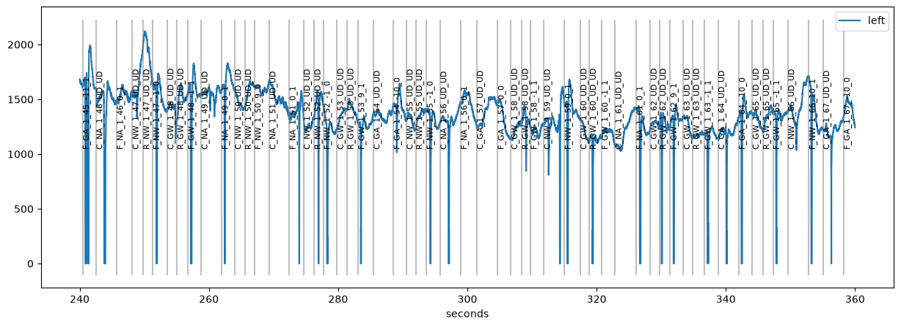
Often, the signal is too long to fit comfortably into one plot. Therefore, you can specify the range to plot with plot_range=. The range can be given with units, e.g., (4.5, 4.7) * u.min or ("260 sec", "280 sec"). The units of the x-axis are set with units= ("ms", "sec", "min" or "h"):
[3]:
plt.figure(figsize=(15, 5))
plt.subplot(1, 2, 1)
d.plot.pupil_plot(plot_range=(260, 280) * u.sec, units="sec")
plt.subplot(1, 2, 2)
d.plot.pupil_plot(plot_range=(4.5, 4.7) * u.min, units="min")
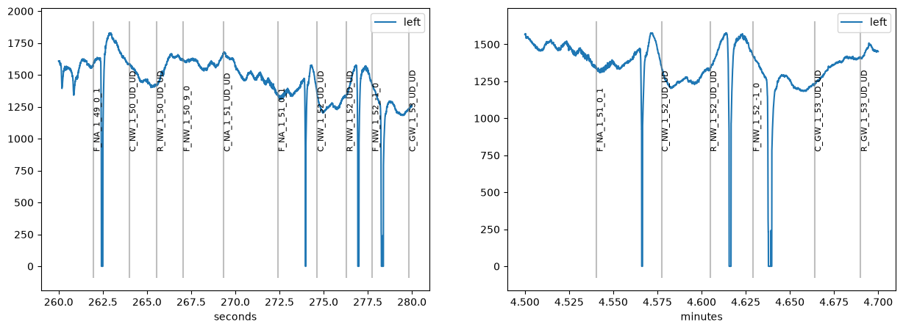
Note that the y-axis goes all the way to zero because missing data is coded as 0 in this dataset.
When we detect blinks (see the blinks notebook) with apply_mask=True, the blinks are masked and highlighted in red:
[4]:
d.pupil_blinks_detect(vel_onset=-15, apply_mask=True)
plt.figure(figsize=(15, 5))
d.plot.pupil_plot(plot_range=(260, 280) * u.sec)
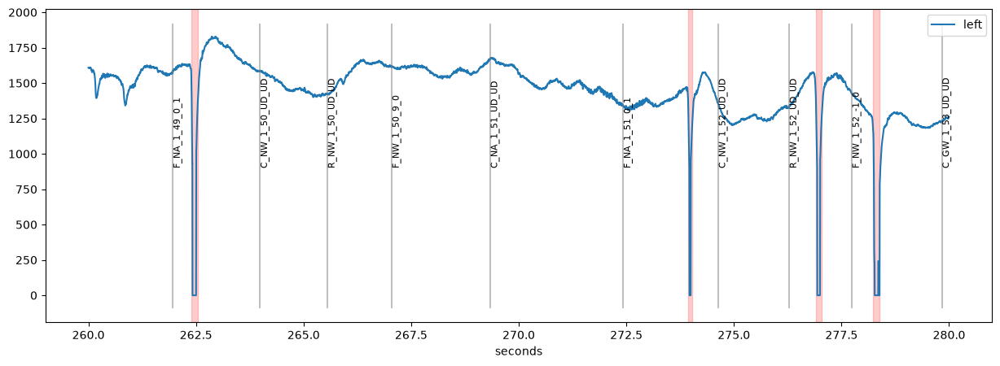
Comparing datasets¶
To compare two versions of a dataset, for example before and after preprocessing, we can plot both into the same figure. The argument label_prefix distinguishes them in the legend and style sets the line style:
[5]:
d2 = d.pupil_lowpass_filter(cutoff=2, inplace=False)
plt.figure(figsize=(15, 5))
d.plot.pupil_plot(plot_range=(260, 280) * u.sec, label_prefix="raw", show_blinks=False)
d2.plot.pupil_plot(plot_range=(260, 280) * u.sec, label_prefix="lowpass",
style={"color": "red"}, show_events=False, show_blinks=False)
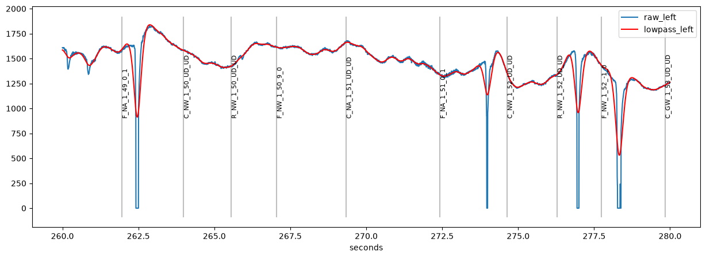
The low-pass filter smears the blinks into the neighbouring signal. This is why blinks should be interpolated before filtering (see the blinks notebook).
Plotting all variables¶
pupil_plot() is specific to pupil data. plot_timeseries() plots all variables (pupil, gaze coordinates, and any variable created during processing), one subplot per variable. Here we use an EyeData object which contains both pupil and gaze data:
[6]:
de = pp.get_example_data("rlmw_002_short")
de.pupil_blinks_detect(apply_mask=True)
plt.figure(figsize=(15, 8))
de.plot.plot_timeseries(plot_range=(10, 20) * u.sec, units="sec")
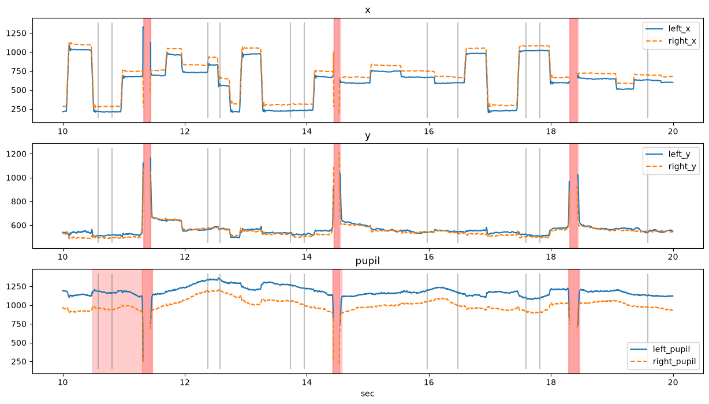
GazeData and EyeData objects also have gaze-specific plots, e.g., a heatmap or a scanpath:
[7]:
plt.figure(figsize=(14, 5))
de.plot.plot_heatmap()
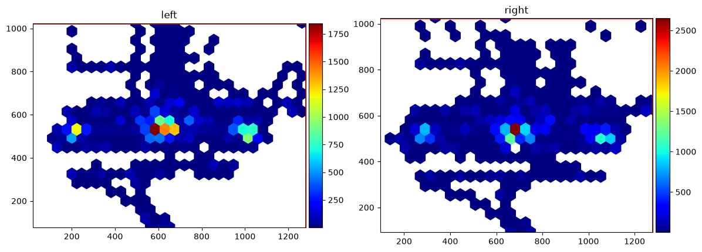
[8]:
de.plot.plot_scanpath(plot_range=(10, 12) * u.sec, eyes="left", figsize=(6, 6))
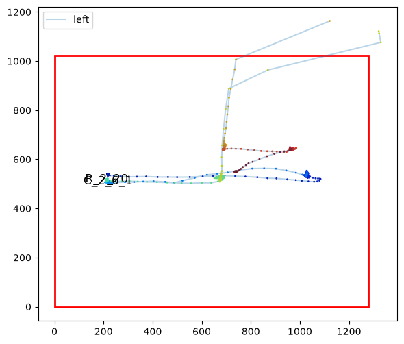
pupil_plot_segments()¶
It is usually a good idea to browse through the whole recording before and after preprocessing. This can be useful for tweaking preprocessing parameters or for detecting gross artifacts. pupil_plot_segments() produces as many plots as necessary, each displaying a part of the data (argument interv, e.g., 30 seconds).
By default, it returns a list of matplotlib figures that can be inspected:
[9]:
figs = d.plot.pupil_plot_segments(interv=30 * u.sec, units="sec", figsize=(15, 3))
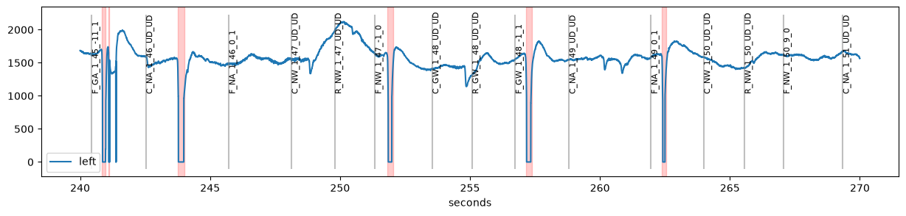
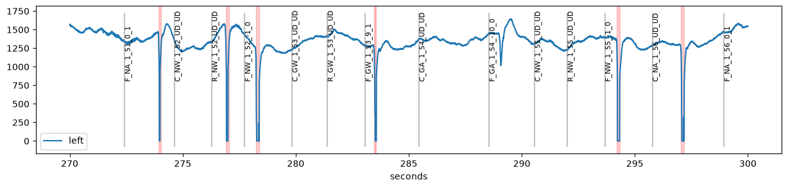
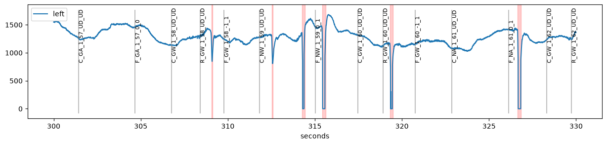
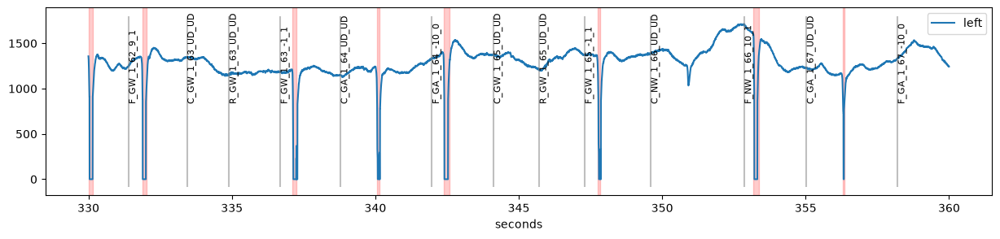
Instead, the plots can be saved to a (multi-page) PDF file for later inspection:
d.plot.pupil_plot_segments(pdf_file="segments.pdf")
plot_timeseries_segments() does the same for all variables.
Inspecting blinks and other intervals¶
Blinks can be tricky to interpolate. To make this easier, plot_blinks() plots all detected blinks, each in its own panel. It works similar to pupil_plot_segments(), i.e., it returns a list of figures or saves them to a PDF file. Each panel shows the index of the blink which allows you to locate individual blinks in the full dataset.
[10]:
d.plot.plot_blinks(nrow=5, ncol=6, figsize=(15, 10), units="sec");
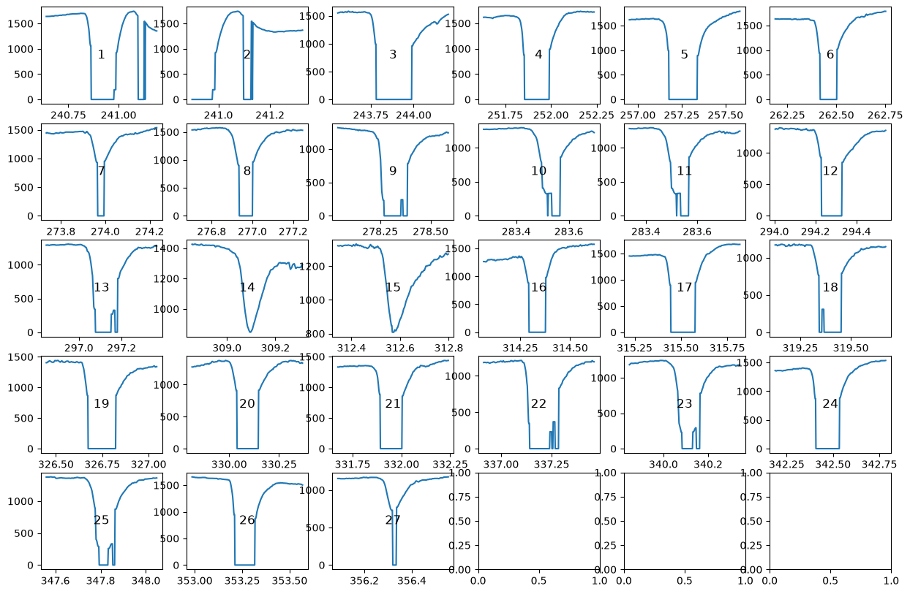
plot_intervals() does the same for any Intervals object, for example the intervals around events returned by get_intervals():
[11]:
cues = d.get_intervals("C_", interval=(-500, 2000) * u.ms)
d.plot.plot_intervals(cues, nrow=4, ncol=6, figsize=(15, 8));
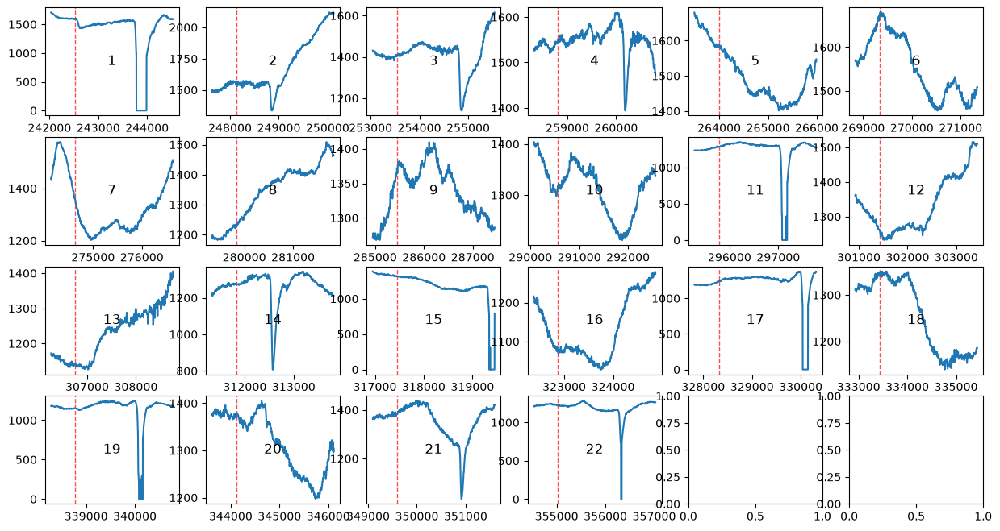
Finally, plot_masked() gives an overview of which parts of the data are masked for each eye and variable:
[12]:
de.plot.plot_masked(units="sec");
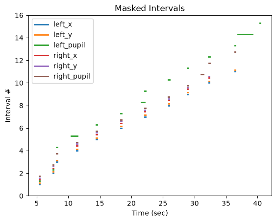
Interactive plotting¶
For interactive exploration, pp.view(d) opens the data in a separate window in which you can zoom and scroll through the recording, and pp.tweak(d) lets you adjust the parameters of preprocessing steps while seeing the results. See Graphical tools for details. Alternatively, you can switch matplotlib to a non-inline backend (e.g., with %matplotlib qt) to zoom and pan in any of the plots above.
Interactive version: